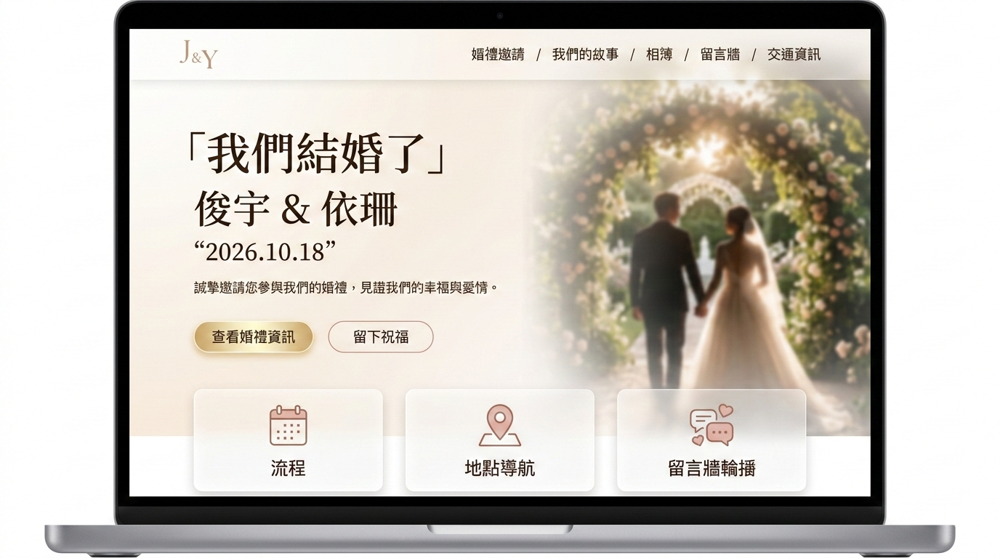
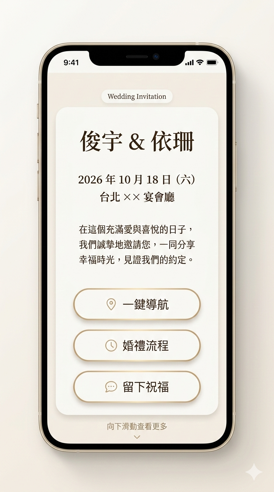
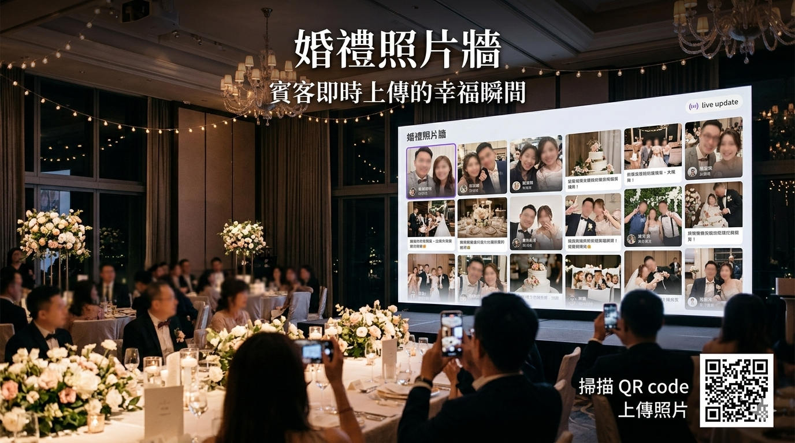

我們不賣模板，賣的是「能長出差異化服務」的數位能力。
婚禮營運與體驗的
數位化共創
你不是在找一個「電子喜帖工具」，你在找一種能力：把婚禮做得更有記憶點、讓團隊更有餘裕，並把這份差異化變成可複製的服務。
體驗差異化
互動留言牆、跨屏輪播、婚禮數位空間
資訊一致性
新人、婚顧、賓客看到同一份最新資訊

Experience + Ops
婚禮互動網站 × 婚顧交付能力
為什麼婚顧需要的不是工具，而是「能力升級」？
婚禮追求的是極致體驗，但後台往往仍用 LINE + Excel 勉強維持。 當案件量增加、變動加速、多人協作變多，痛點會從「麻煩」變成「風險」。
{{ prob.title }}
{{ prob.desc }}
Wedding Ops：把體驗與交付，放在同一個節奏上
婚禮的價值不只在「美」，也在「順」。 Wedding Ops 用一致的資訊節點，讓賓客體驗、婚顧協作、與交付品質能彼此支撐。
{{ sol.title }}
{{ sol.desc }}
Concept Map
Experience ↔ Ops
Wedding Ops
Central System
讓每個觸點一致
Guest
互動與資訊入口
Planner
交付節奏與品質
Website
婚禮數位空間
Onsite
現場氛圍升級
全方位的產品能力
不是「功能清單」，而是婚禮體驗與婚顧交付可以一起升級的能力組合。
{{ cap.title }}
{{ cap.desc }}
- {{ feature }}
客製化婚禮互動網站
這不是「一頁式邀請函」，而是一個能把祝福、照片與故事留住的婚禮數位空間。 賓客可以在婚禮前後留下祝福，留言也能於現場跨屏輪播，直接把氣氛拉滿。
婚禮前
資訊集中、祝福先暖場
婚禮中
留言輪播、氛圍升級
婚禮後
回憶保存、可長期分享
本案例包含的體驗模組
Client Voice
「我們原本以為只是一個喜帖頁面，結果現場留言輪播讓所有人都參與進來，氣氛完全不一樣。」
— 實務案例新人回饋




數位化帶來的不是「省人力」，而是「服務升級」
當婚顧把數位能力變成標配，你會得到三種很真實的好處：更穩定的交付、更可加值的方案、更鮮明的品牌差異。
{{ p.title }}
{{ p.desc }}
傳統交付 vs 數位化交付
這張表不是在「踩傳統」，而是在說：你可以把高端服務做得更穩、更好賣。
| 面向 | 傳統做法（常見） | Wedding Ops（交付升級） |
|---|---|---|
| {{ adv.item }} | {{ adv.old }} |
{{ adv.new }}
{{ adv.note }} |
「當別人賣的是『服務』，你可以賣『服務＋數位體驗』。差異化不是口號，是交付物本身。」
輕量化導入，
讓你「立刻用得起來」
婚顧最怕導入新東西會卡住。這裡的設計原則很簡單：先從「最能提升體驗」的前台開始， 讓你在短時間內拿到可以交付給新人的成果，再逐步把它延伸成可複製的交付流程。
導入時你會得到的安心感
{{ step.title }}
{{ step.desc }}
交付物（示例）
{{ step.deliverable }}
常見問題
你心裡的疑慮，我們先替你寫出來。
我們最在意的是：你能不能「拿去賣、拿去交付」
如果你是婚顧公司，我們會優先設計「方案包」與「交付物」，確保你可以把這份數位能力當成服務差異化， 而不是做完一個網站就結束。你會得到的是一套可持續迭代的資產。
探索婚禮數位化的可能
30 分鐘交流，我們會幫你釐清：你現在最需要的是「體驗升級」、「交付穩定」，還是「方案商品化」。 你不需要先準備一堆資料，帶著現況來就行。
你會得到
Contact
留下資訊，我們用「產品方式」跟你談合作
不談技術名詞，只談你要賣的服務、你要交付的體驗。